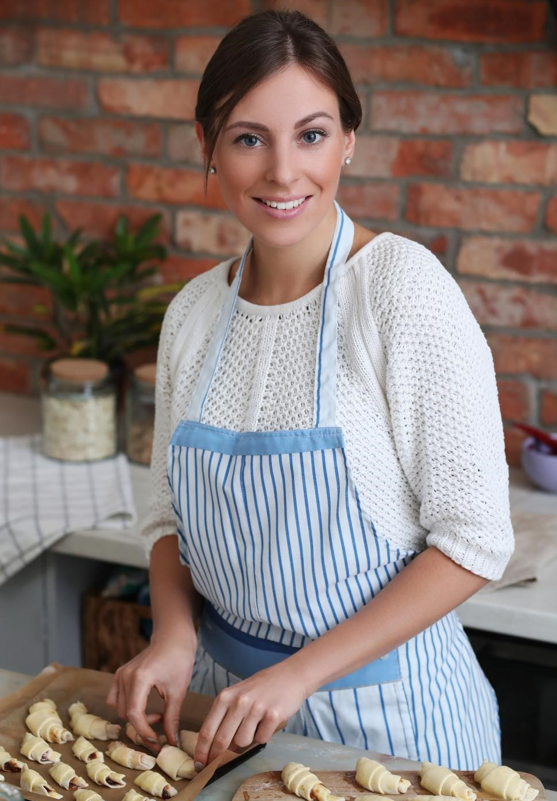

Witaj na moim blogu!
Nazywam się Katarzyna i mam 30 lat. Moje Słodkości to blog, który powstał z chęci dzielenia się moją pasją jaką jest pieczenie i dekorowanie ciast, a w szczególności tortów.
Po ciężkim dniu najlepiej relaksuję się i odpoczywam właśnie w kuchni, wśród garnków, produktów spożywczych i całej masy przypraw tworząc „kulinarne cuda”. Najbardziej jednak lubię tworzyć słodkie smakołyki i obserwować, jak szybko znikają ze stołu. Hobby połączyłam z pracą i wykonuję torty na zamówienie na różne okazje: śluby, urodziny czy jubileusze.
Mam nadzieję, że zagościsz u mnie na dłużej, a moje słodkie dzieła sztuki staną się dla Ciebie inspiracją!